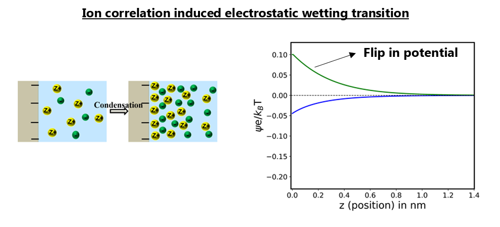
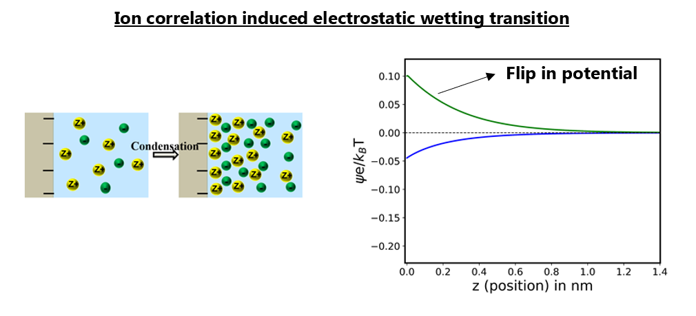
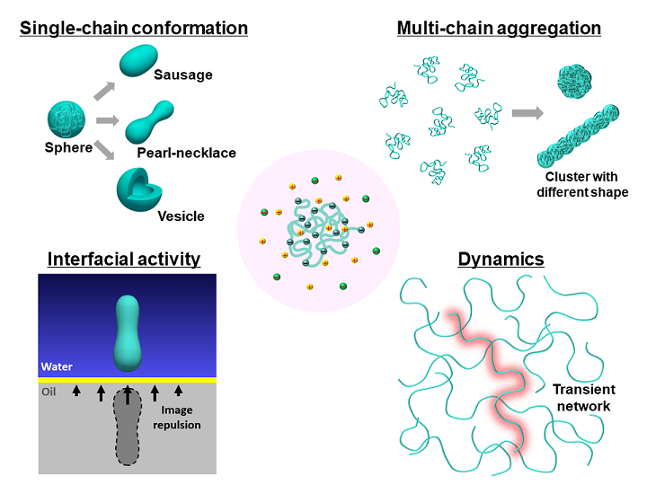
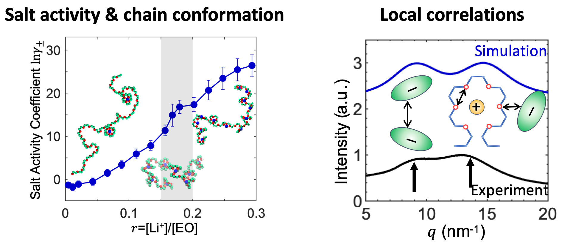
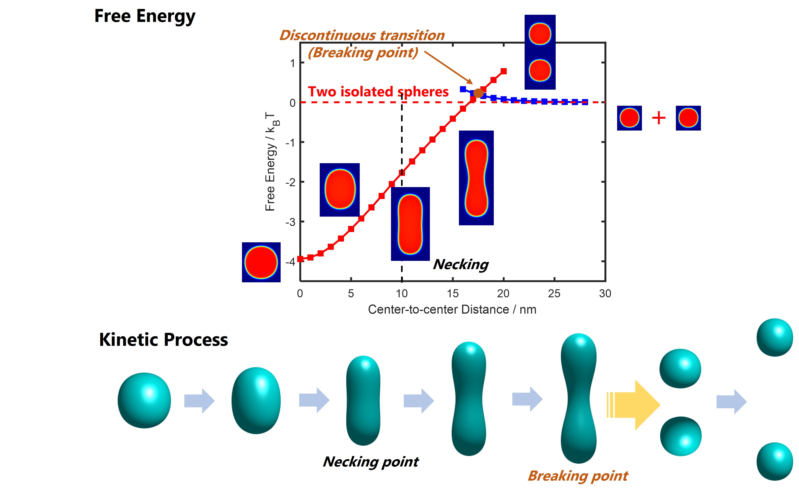

Complex electrostatic phenomena at interfaces
Nikhil Agrawal, Chao Fang and Zach Lipel

Nikhil Agrawal, Chao Fang and Zach Lipel

The Electrical Double Layer lies at the heart of soft matter and colloidal physics. They play a decisive role in dictating transport and thermodynamics in processes occurring from macroscale systems like batteries to small scale behavior in biophysical systems. The structure of EDL is very well described by mean field Poisson-Boltzmann (PB) at the so-called weak coupling limit where the systems is characterized by low valency, low concentration and low surface charge values. But the absence of electrostatic correlations, image charge and excluded volume effects does not allow PB to model the rich and complex behavior shown by EDLs at moderate and strong coupling especially for multivalent ions.
We have recently developed a field theory based statistical mechanical model to self consistently include all the missing effects in PB into the EDL and have been successful in explaining experiments related to many fundamental phenomena like charge inversion and like-charge attraction. Our group is currently working on using this theory to understand the effect of these complex electrostatic forces on surface tension, biological membranes, microgels, and nanoscale electrokinetics.
Chao Duan and Takashi Yokokura

Polyelectrolytes (PEs) are polymers with charged repeating units with ubiquitous applications, such as surfactants in personal care/health products, surface-modifiers in water treatment and oil recovery, additives in foods, superabsorbers in agriculture and sanitation, biomedical materials in implant coating and drug delivery, and electrolytes in lithium batteries. Biomacromolecules, like proteins, DNA, and RNA, are also essentially PEs. Due to the competition between the short-range van der Waals interactions and the long-range electrostatic interactions, PEs exhibit rich and complex structural, interfacial, and dynamic behaviors.
Theoretical modeling of PE systems remains an outstanding challenge. We have developed a computational platform that combines the field theory and molecular simulation to investigate a variety of structural and dynamic properties of PEs. The theoretical approach systematically includes interactions with different effective ranges and self-consistently describe the coupling between the electrostatic interaction and the structural softness of polymers. With this powerful tool, we aim to address several fundamental questions relevant to PEs, i.e., globule to pearl-necklace transition, finite-size aggregates, absence of interfacial activity, and “slow mode” in diffusion.
Our theory is also an ideal platform for exploring the potential applications of PEs in stimuli-responsive materials, energy storage, and biomedical materials. Furthermore, the platform provides a fundamental step towards understanding challenges in biological systems, such as folding, binding, adsorption, and translocation of proteins.
Chao Fang

Solid-state polymer electrolytes are promising candidates for the potential usage in the next generation of lithium-ion batteries. These electrolytes are usually designed and synthesized using atomic-level insights. They are characterized by an ion solvation cage and the battery performance is largely determined by ion-polymer interactions and ion-ion correlations. This project uses molecular simulation to investigate the ion solvation and transport in polymer electrolytes and is in close collaboration with experiments. Other than the agreement with experiments, the insights from molecular simulation help obtain microscopic understanding of the unusual structure, thermodynamic, and dynamic properties, and ultimately help optimizing the performance of solid-state lithium batteries.
Luofu Liu

Polyelectrolytes (PEs) are polymers with charged repeating units which have broad applications in surfactants, absorbers, battery electrolytes and stimuli-responsive functional materials, and are widely used as model systems to study biomolecules such as DNA, RNA and proteins. The interaction between PE chains essentially governs a wealth of structure and dynamic properties. While interactions between rigid colloidal particles are well characterized by DLVO theory, a systematic description of the interactions between polyelectrolyte globules is still lacking as they are soft, deformable and can overlap with each other.
We developed a constraint self-consistent field theory which enables us to quantify the potential of mean force as a function of center-of-mass separation. The theory systematically captures the coupling between the position-dependence of interaction and chain conformation. This study elucidates that the two-body interaction between soft particles is essentially different from that of rigid particles. The potential of mean force obtained from our work is an important ingredient in the coarse-grained molecular simulations which can be used to study the aggregation and dynamics of charged macromolecules.